Design at Nova
Architecture begins
with proportion.
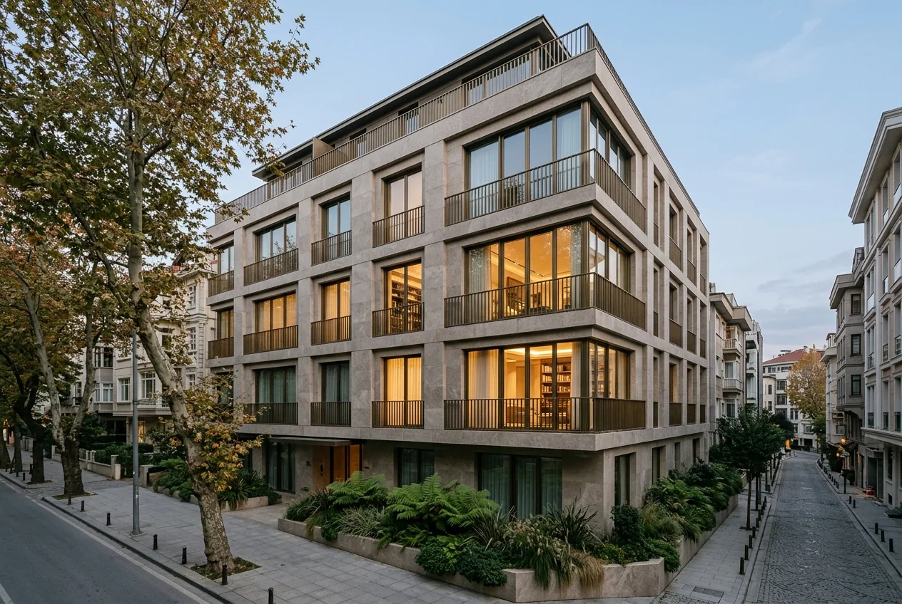
Shaped from
within.
A home's character emerges in the first decisions about its plan. Proportion, orientation, daylight and the relationships between rooms are considered before finishes and materials. The way life moves through the home is established here; the architecture develops from this foundation.
The plan follows the rhythms of daily life. Shared rooms offer openness, private spaces provide retreat, and movement between them feels natural. In a well-resolved plan, this balance is simply part of being at home.
Architecture
Considered
as a whole.
Nova's architectural approach rests on clarity of plan and balanced proportions. Structure, circulation, façade and interiors are developed as parts of a single design. Each decision is considered in relation to the building as a whole.
The façade responds to the building's scale, orientation, need for privacy and surrounding character. Inside, room proportions, fluid transitions and daylight take precedence. The aim is a home that retains its architectural quality and comfort over the years.
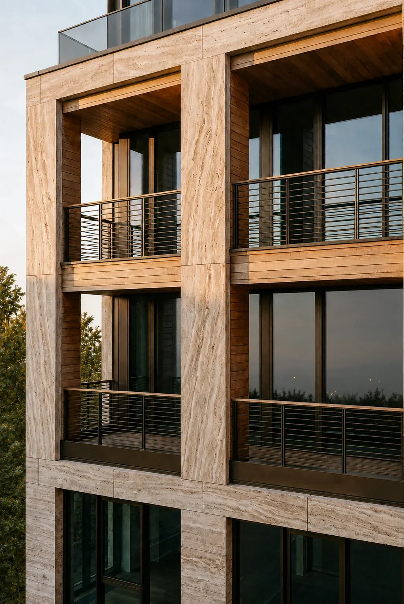
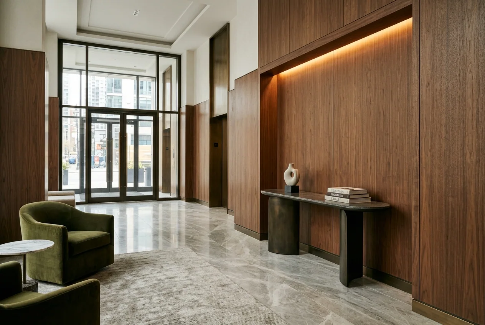
Space & Proportion
Rooms proportioned for living.
A room's quality depends as much on its relationships as on its floor area. Sightlines, circulation, furniture layouts, thresholds and transitions are studied together. Each space is considered both for its own use and for its place within the home.
Living areas favour openness and continuity; bedrooms and quieter rooms retain their privacy. Structure, service shafts and the architectural plan are coordinated from the outset, allowing technical requirements to support the proportions and ease of use of each room.
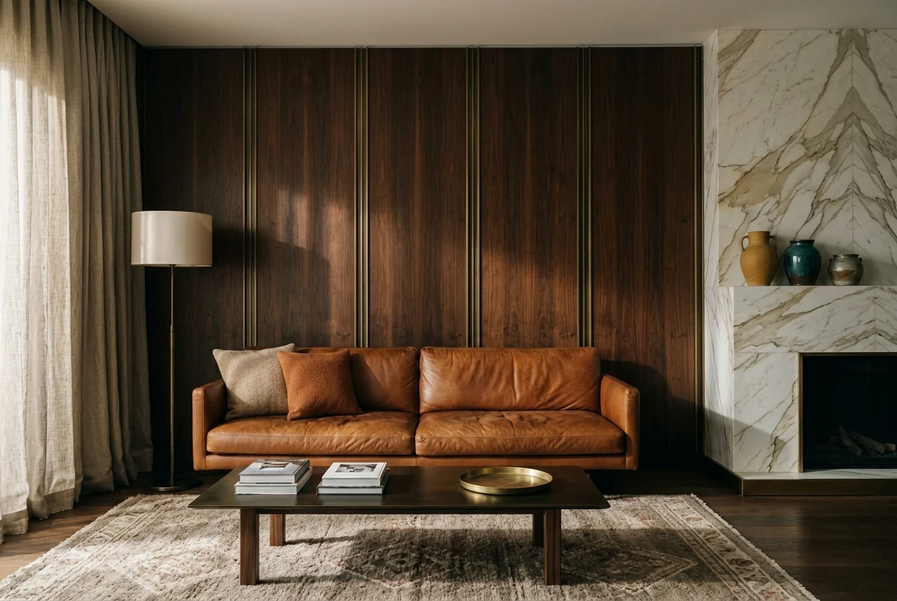
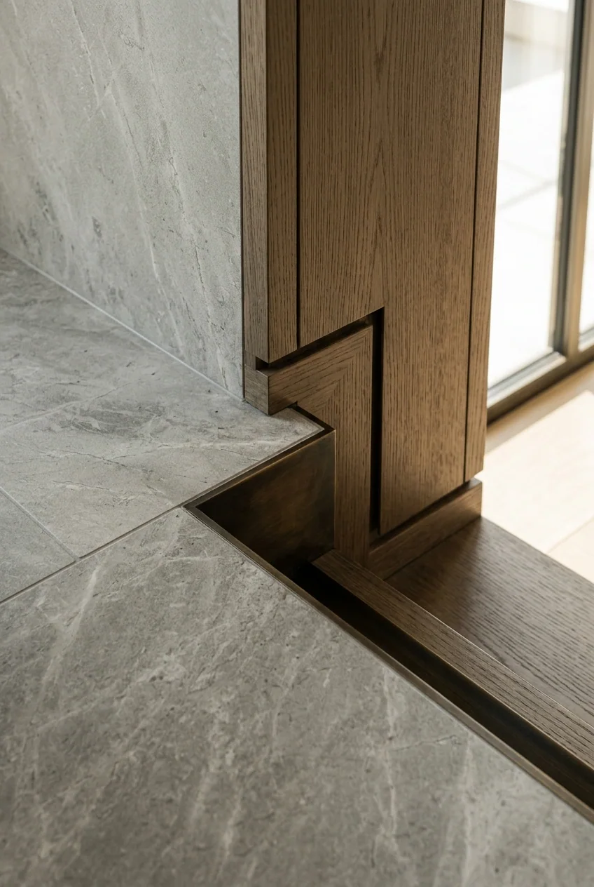
A sense of balance, felt from the first step.
Light
Space shaped by light.
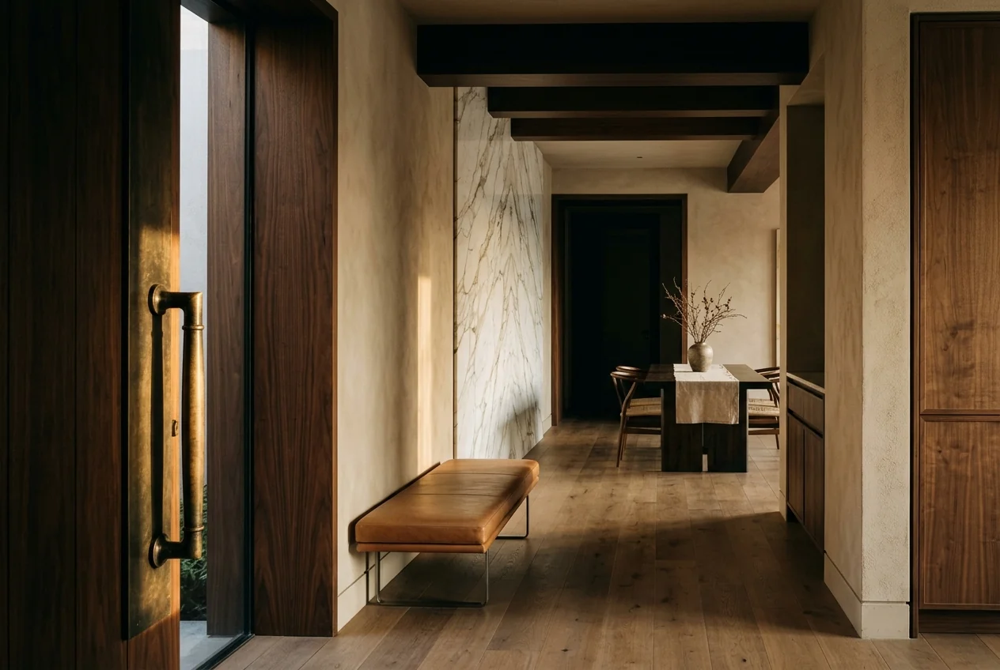
Balancing light and openness
As the day progresses, daylight reveals different surfaces within a room. Window dimensions, orientation, room depth and façade openings are considered as a single composition, attentive to these changes.
Views, privacy, solar exposure and thermal comfort determine the size and position of glazing. In the evening, concealed lighting, integrated joinery lighting and task lighting form distinct layers, preserving the room's depth and warmth.
Light reveals the character of a room.
Materials
Materials of
lasting character.
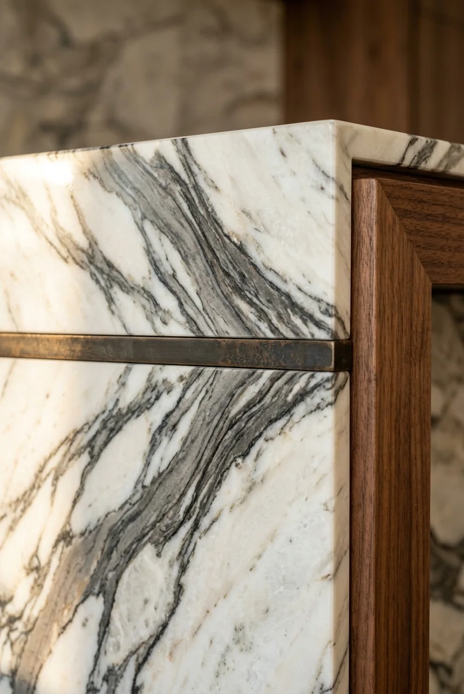
Materials are selected for their appearance, feel and performance in use. The way stone, timber, metal, leather and glass change over time matters as much as their appearance on the first day. Each surface is chosen with years of use in mind.
Timber grain, stone veining, joint widths and transitions between surfaces receive the same attention. A restrained, coherent palette creates a balanced interior in which each material retains its own character.
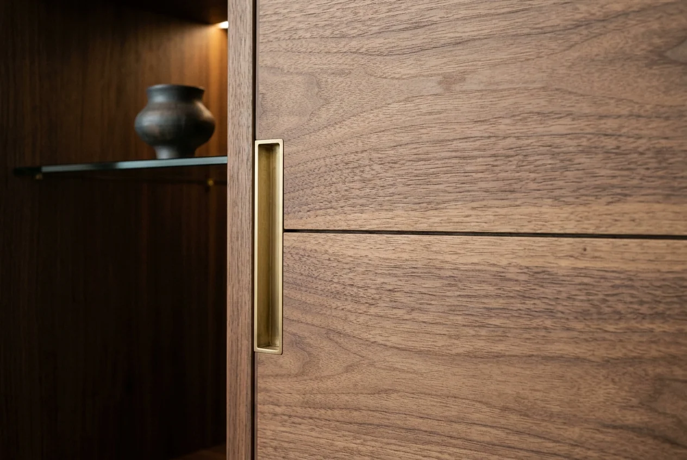
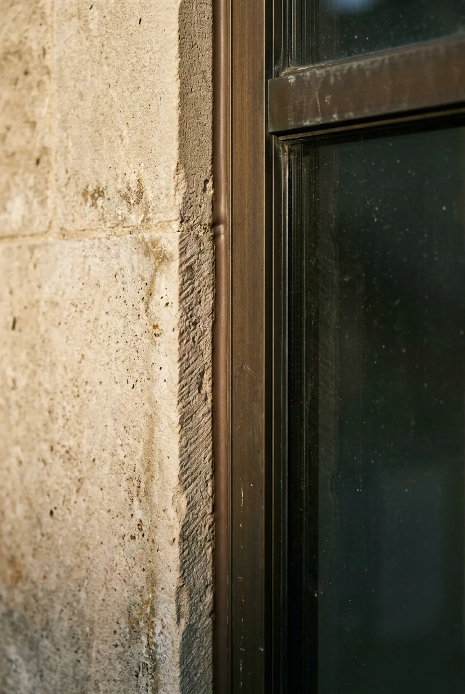
Craftsmanship is revealed where materials meet.
Material Selection
Five materials,
five distinct characters.
Selected according to the project brief and client preferences, these five materials offer an insight into Nova's design palette. Rotate the samples to explore their origins, finishes and the qualities they acquire over time.
3D — drag to explore
01 / 05 · Walnut
-
01
Walnut
- Origin
- American black walnut, Juglans nigra. Sourced from the eastern United States and south-eastern Canada.
- Cut
- Flat-cut veneers reveal broad, curved grain patterns; quarter-cut veneers produce a more regular, linear grain.
- Finish
- Veneers are sequence-matched, sanded by hand and finished with oil or matt lacquer to preserve their natural texture.
- Applications
- Wall panelling, wardrobe fronts, door leaves and fitted joinery.
- Ageing
- Daylight gradually softens dark brown tones towards warm amber. Minor marks may be repaired locally, depending on the finish.
-
02
Pietra Grey Natural Stone
- Origin
- Pietra Grey from the Isfahan region of Iran. Numbered, consecutive slabs are selected for continuity of veining.
- Pattern
- Fine, pale veins are bookmatched across an anthracite ground, with careful attention to the pattern at each slab junction.
- Finish
- Honed for a matt, tactile surface; lightly polished where greater depth of colour is desired.
- Applications
- Entrance walls, feature surfaces, bathroom cladding and selected worktops.
- Ageing
- An impregnating sealer helps protect the surface. This calcareous stone requires non-acidic care products to preserve its natural tone.
-
03
Aged bronze
- Origin
- Solid bronze and brass components made in specialist foundries and metal workshops in northern Italy.
- Composition
- Cast bronze is used for sculptural forms; solid brass for hardware requiring precision workmanship.
- Finish
- Brushed by hand, chemically patinated and protected with wax or clear lacquer.
- Applications
- Door hardware, furniture handles, shadow-gap profiles, lighting details and balustrades.
- Ageing
- Patina deepens on unlacquered surfaces; frequently touched edges develop a natural sheen.
-
04
Leather
- Origin
- Full-grain calfskin, vegetable-tanned in specialist Tuscan tanneries between Florence and Pisa.
- Texture
- The natural grain and subtle variations of each hide remain visible, without an artificially embossed pattern.
- Finish
- Drum-dyed with aniline dyes, conditioned with oils and waxes, and finished with burnished edges and tonal saddle stitching.
- Applications
- Seating, headboards, wardrobe interiors, drawer linings and handrail coverings.
- Ageing
- Softens with use, deepens in tone and gradually develops a patina of its own.
-
05
Smoked glass
- Origin
- Body-tinted float glass sourced from leading architectural glass manufacturers in Belgium, Germany or Türkiye.
- Composition
- Mineral colourants added to the glass batch create a grey or bronze tone throughout its thickness.
- Finish
- Edges are ground and polished; glass is toughened or laminated according to its application, safety and load requirements.
- Applications
- Cabinet fronts, room dividers, shower screens, bar units and shelving systems.
- Ageing
- The colour is integral to the glass and cannot peel like an applied surface coating.
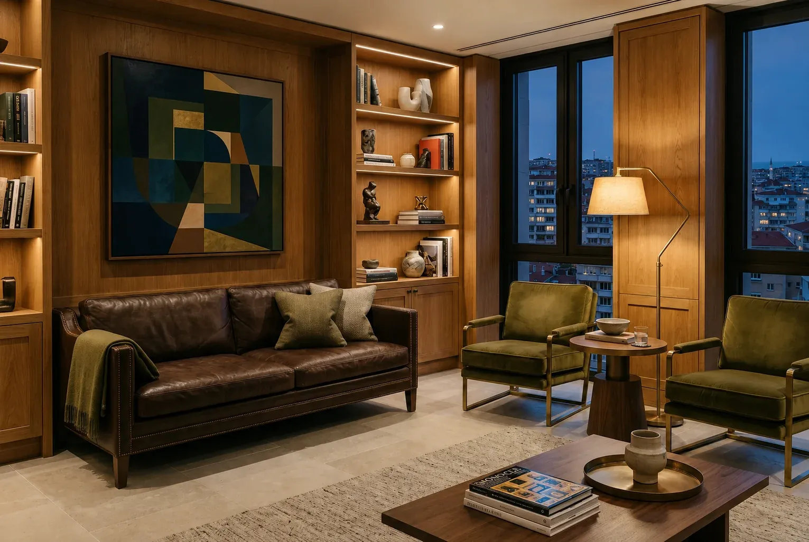
Interiors
Warmth,
with restraint.
Interior design develops alongside the architecture. Wall finishes, fitted joinery, lighting, material transitions and building services are considered together from the outset. The position, scale and contribution of each element are established as the plan evolves.
A warm, balanced palette brings together timber, stone, metal, leather and textiles. Surfaces lend depth to the room while providing a quiet setting for furniture, artworks and personal objects.
Quality is felt in daily use: the closing of a door, the alignment of panels, the weight of a handle, the width of a shadow gap and the touch of a surface.
Detail
Refinement,
at every junction.
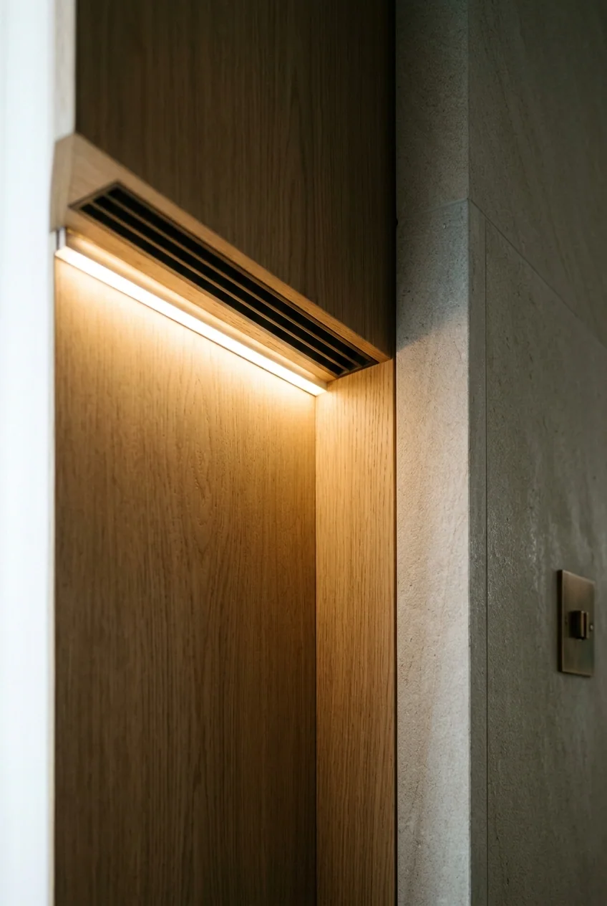
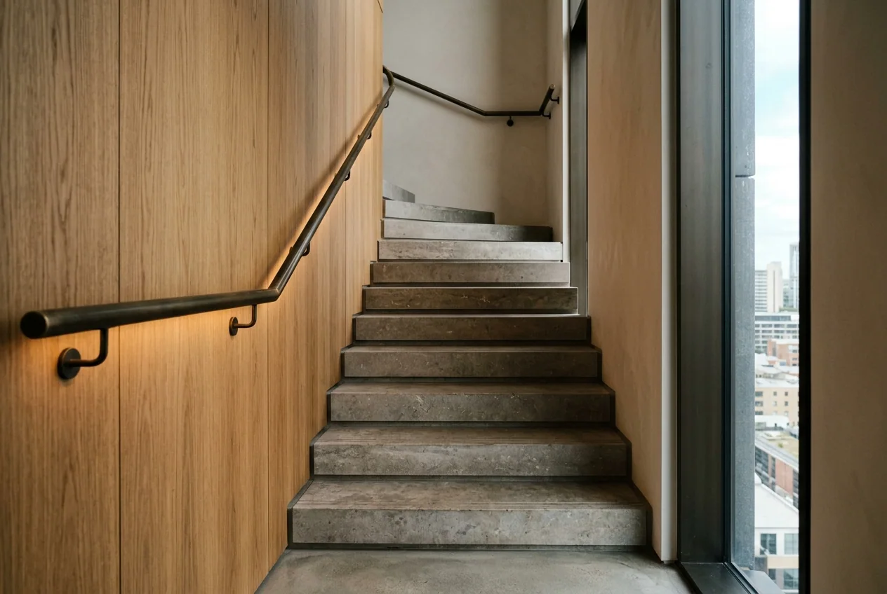
Shadow gaps, thresholds, joinery alignments, metal junctions, flush grilles and concealed services are resolved before finishing work begins. Precision at these junctions maintains continuity between surfaces and gives the room its sense of calm and cohesion.
Landscape
Living extends
outdoors.
Landscape is designed alongside the home. Entrances, terraces, courtyards, planting and outdoor seating extend the same plan. Use, materials and spatial relationships are considered together as the home opens to the outdoors.
Existing trees, evergreen species and seasonal planting are considered for privacy, shade and spatial depth. Planting defines the boundaries, scale and changing seasonal character of outdoor spaces.
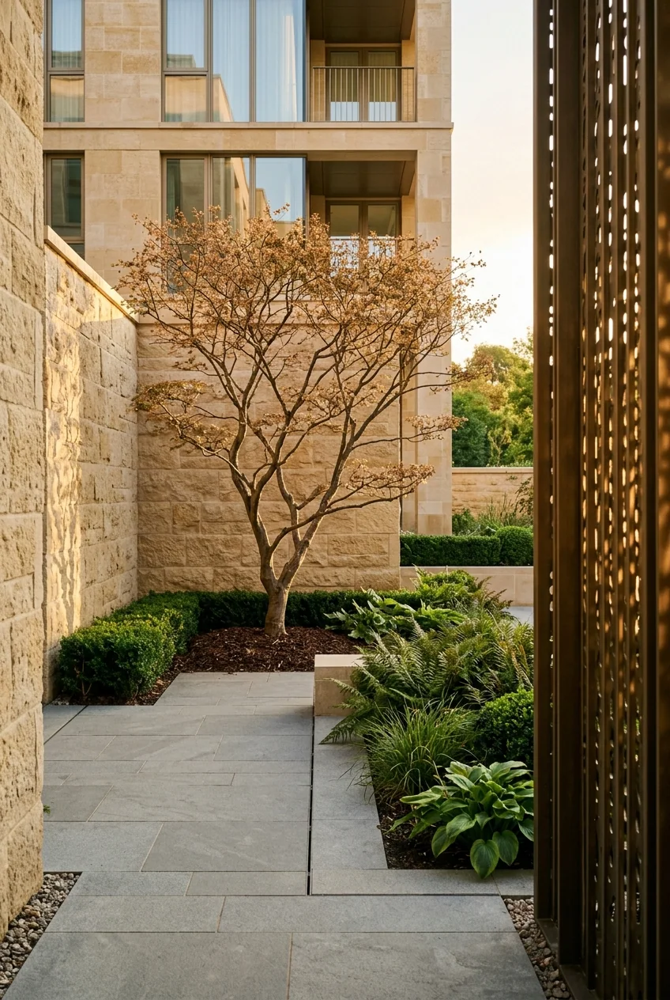
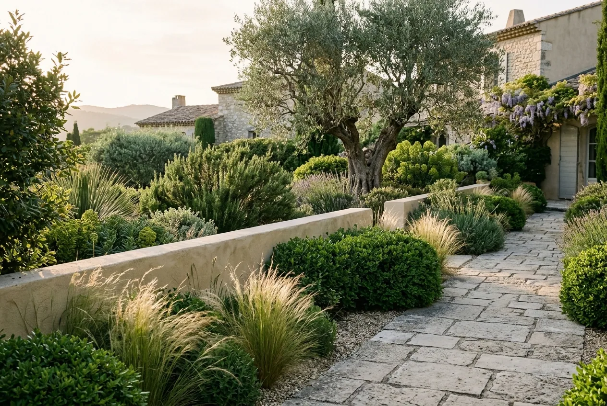
Architecture and landscape, conceived together.
Context
A sense of belonging.
Every address has its own conditions. Street width, neighbouring buildings, orientation, existing planting, views and daylight inform the first design decisions.
In Bağdat Caddesi and its established residential neighbourhoods, this relationship calls for particular care. A new building must meet contemporary expectations while respecting the scale, rhythm and settled character of its street.
Architecture carries the character of its setting.
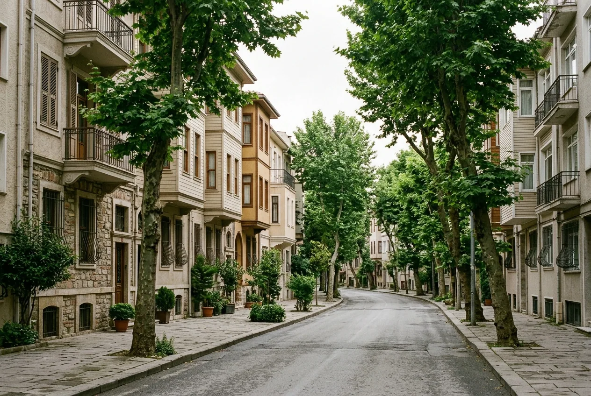
Design Process
From the first line
to the final detail.
-
01
Context
Site conditions, orientation, planning requirements and the surrounding urban fabric establish the project brief.
-
02
Proportion
Spatial relationships, circulation and structural geometry are considered together within a single plan.
-
03
Material
Each material is selected for its performance, durability, texture and relationship to the interior as a whole.
-
04
Coordination
Architecture, structure, façade, interiors and building services are coordinated before work begins on site.
-
05
Detail
Critical junctions are resolved through working drawings, samples, mock-ups and site reviews.
Design & Execution
The same care,
from drawing to making.
Design quality is preserved through precision in execution. Dimensions, substrate preparation, tolerances and material junctions are checked throughout construction. The relationships established in the drawings are carried through to the completed space.
Samples and mock-ups allow colour, texture, grain direction and adjoining finishes to be reviewed together before final procurement and installation.
Craftsmanship carries the care of the design into the finished work.
From design
to built form.
Behind every surface lies a coordinated system of structure, façade, waterproofing and building services. At Nova, design quality is measured by the care with which architectural decisions are preserved through engineering and construction.
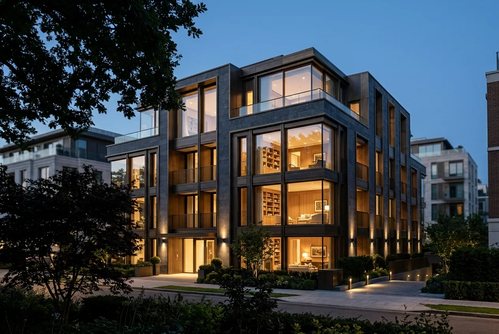
NovaBuild beyond living